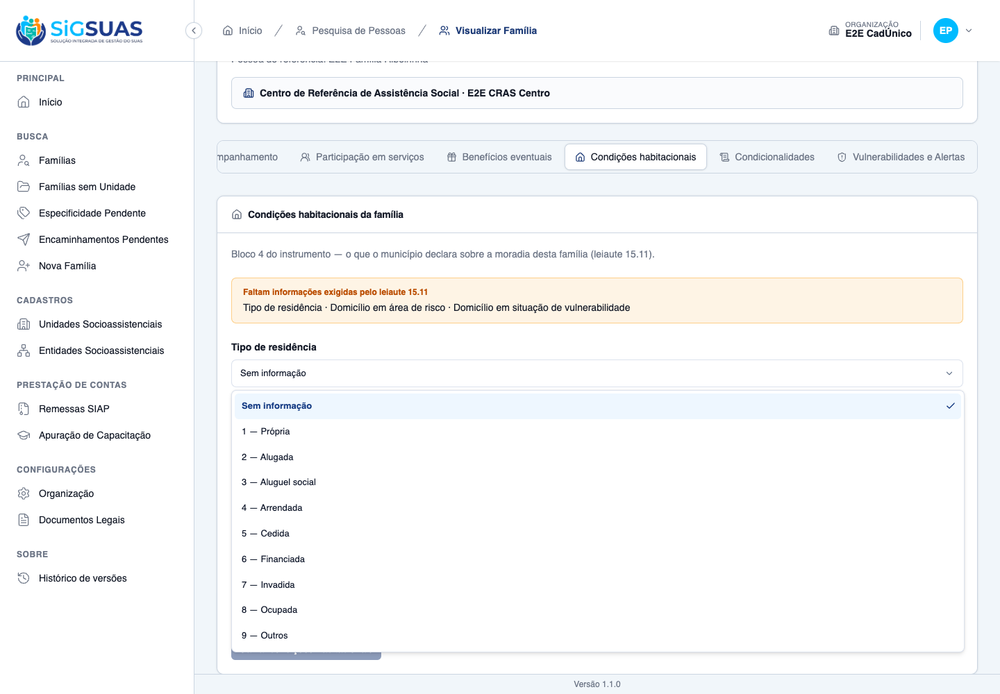
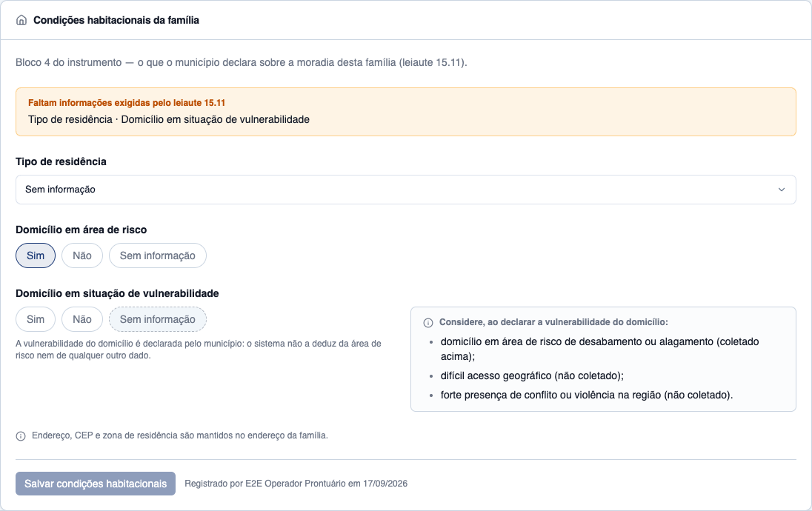
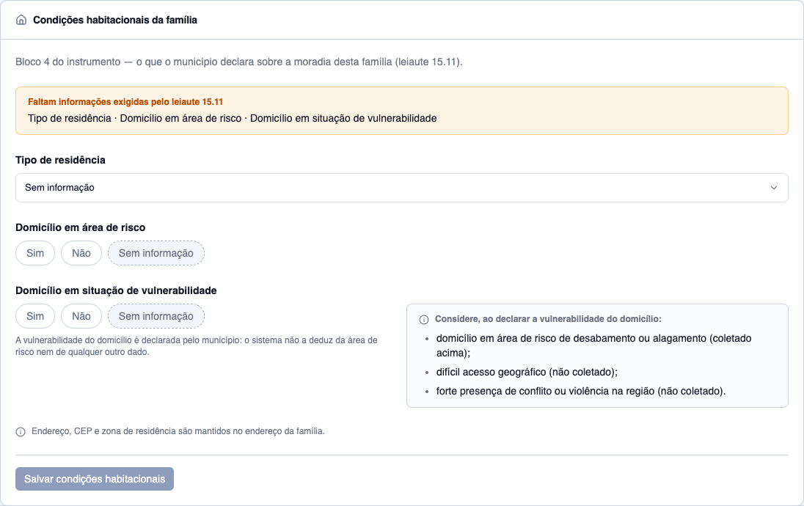
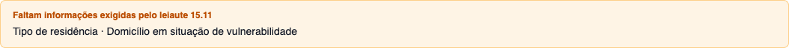
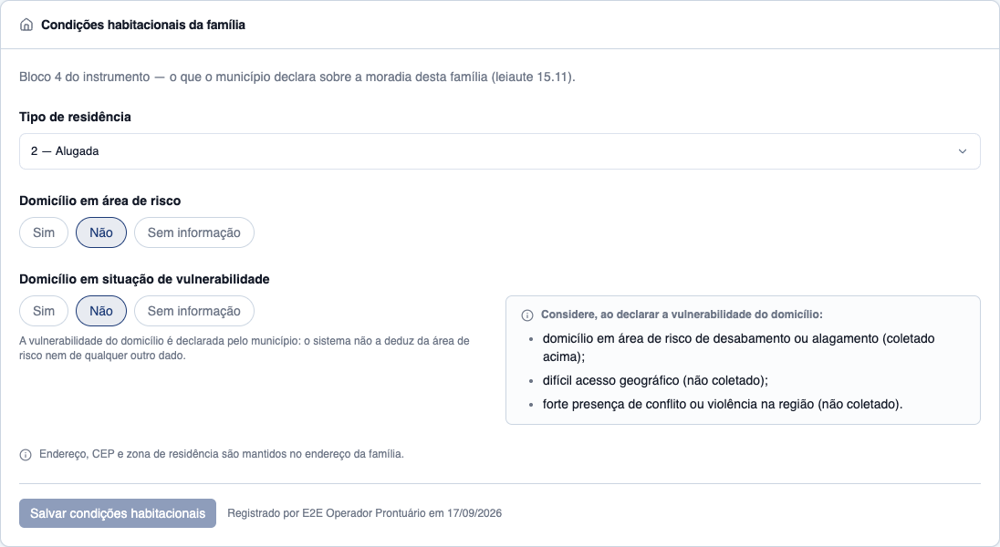
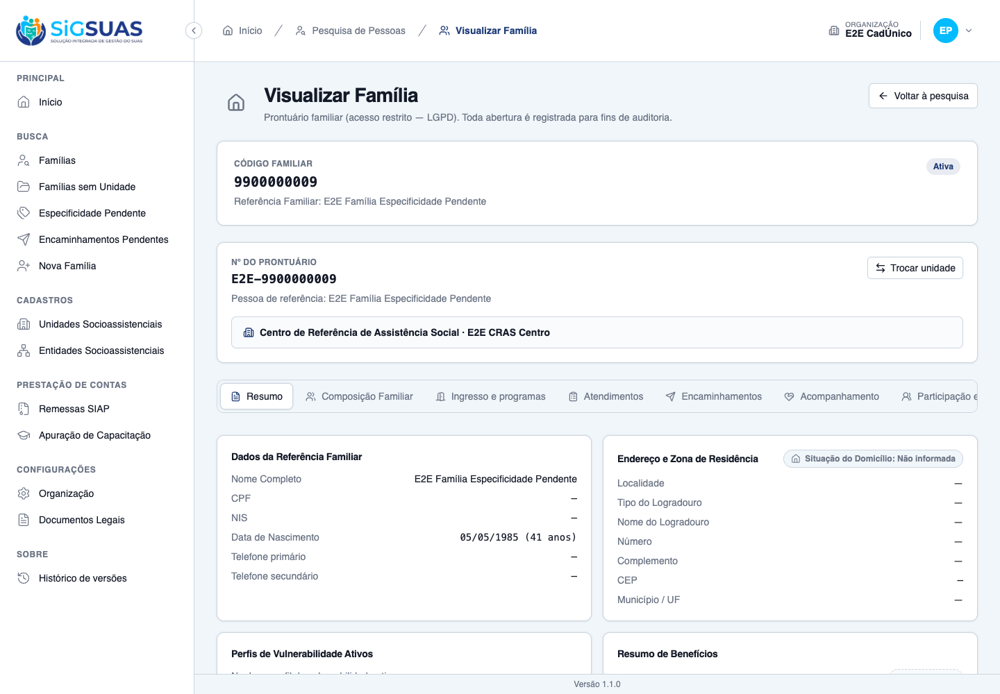
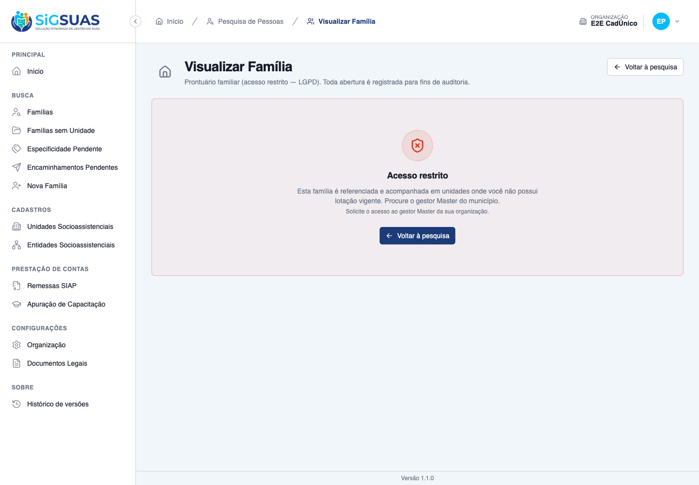

Relatório de Critérios de Aceite — US-DIAG-02 · Condições habitacionais da família
Resumo
Os 10 critérios de aceite da US-DIAG-02 foram verificados: 4 exclusivamente no navegador, 5 de forma combinada (navegador + suíte Pest / payload da API / trilha de auditoria) e 1 exclusivamente automatizado (isolamento entre organizações, que a massa de dados disponível não permite encenar na tela). Nenhum critério ficou em falta e nenhum defeito foi encontrado. Os três critérios mais sensíveis da história foram provados com dado real do banco: a vulnerabilidade do domicílio permaneceu NULL depois de gravar a área de risco como "sim" (CA03), a família sem registro devolveu os três campos vazios e nenhum deles como "Não" (CA05), e os elementos de apoio aparecem como texto de leitura, sem nenhum controle de entrada (CA04). A suíte automatizada fechou 27 testes verdes / 152 asserções.
| CA | Critério | Status |
|---|---|---|
| CA01 | Registrar as condições habitacionais (happy path) | ATENDIDO · navegador |
| CA02 | Tipo de residência com as nove opções | ATENDIDO · navegador |
| CA03 | Vulnerabilidade não é calculada | ATENDIDO · navegador + automatizado |
| CA04 | Elementos de apoio à declaração | ATENDIDO · navegador |
| CA05 | Ausência é diferente de negativa | ATENDIDO · navegador + automatizado |
| CA06 | Ausência gera pendência na conferência | ATENDIDO · navegador + automatizado |
| CA07 | Correção auditada | ATENDIDO · navegador + automatizado |
| CA08 | O endereço não é editado aqui | ATENDIDO · navegador |
| CA09 | Negativa declara o motivo | ATENDIDO · navegador + automatizado |
| CA10 | Isolamento entre municípios | ATENDIDO · automatizado |
CA01 — Registrar as condições habitacionais (happy path) ATENDIDO · navegador
Critério (Gherkin): Dado que sou Operacional do Tenant com o add-on LGPD, lotado no "CRAS Centro" E que a família Silva é referenciada no "CRAS Centro" Quando eu registrar tipo de residência "cedida", área de risco "não" e vulnerabilidade "não" Então os três valores são salvos E constam no prontuário com meu nome e a data
Como foi testado: Autenticado como E2E Operador Prontuário (operador + add-on LGPD, lotado no E2E CRAS Centro), abri o prontuário da família 9900000009 — referenciada no E2E CRAS Centro — e a aba Condições habitacionais. Selecionei 5 — Cedida, marquei Não em "Domicílio em área de risco" e Não em "Domicílio em situação de vulnerabilidade", e cliquei em Salvar condições habitacionais.
- PUT /api/client/families/00000000-…-f0009/housing-conditions respondeu 200.
- Linha gravada no banco: residence_type_id=5 · in_risk_area=false · domicile_vulnerability=false · created_by=14.
- A tela passou a exibir a assinatura "Registrado por E2E Operador Prontuário em 17/09/2026" (RN10 — registro assinado e datado).
- O aviso de pendência do leiaute 15.11 desapareceu: com os três campos respondidos, não há mais campo em falta.
CA02 — Tipo de residência com as nove opções ATENDIDO · navegador
Critério (Gherkin): Quando eu abrir o select de tipo de residência Então me são oferecidas as nove opções do Manual, incluindo aluguel social, arrendada, financiada e invadida
Como foi testado: Na aba Condições habitacionais, abri o campo Tipo de residência. A lista vem do lookup global GET /api/residence-types (US-DIAG-01), não de uma lista escrita na tela.
- As nove opções do Manual são oferecidas, na ordem e com o código: 1 — Própria, 2 — Alugada, 3 — Aluguel social, 4 — Arrendada, 5 — Cedida, 6 — Financiada, 7 — Invadida, 8 — Ocupada, 9 — Outros.
- As quatro opções citadas nominalmente pelo critério estão presentes: aluguel social (3), arrendada (4), financiada (6) e invadida (7).
- Além das nove, o select oferece "Sem informação" — que não é uma décima opção do Manual, e sim o terceiro estado do campo (RN06): o tipo de residência pode voltar a não ter resposta, e isso é pendência, não um valor.

CA03 — Vulnerabilidade não é calculada ATENDIDO · navegador + automatizado
Critério (Gherkin): Dado que registrei in_risk_area = true Quando eu abrir o campo de vulnerabilidade do domicílio Então domicile_vulnerability permanece NULL E nenhum valor foi atribuído pelo sistema a partir da área de risco
Como foi testado: Na família 9900000007, marquei Sim em "Domicílio em área de risco" sem tocar no campo de vulnerabilidade e salvei. Em seguida conferi o estado da tela, o payload devolvido pelo GET e a linha no banco.
familia 9900000007 (CA03)
{
"residence_type": null,
"in_risk_area": true,
"domicile_vulnerability": null,
"missing_fields": ["residence_type", "domicile_vulnerability"]
}
-- banco --
residence_type_id = NULL | in_risk_area = true | domicile_vulnerability = NULL
- Na tela, o controle de vulnerabilidade permaneceu em "Sem informação" — nada foi pré-preenchido, sugerido ou marcado pelo sistema a partir da área de risco.
- No banco, domicile_vulnerability continua NULL depois de gravar in_risk_area = true (D04 — o campo não tem default, mutator, observer nem derivação).
- No payload da API, o valor volta como null, e o campo aparece em missing_fields.
- A tela ainda declara a regra em texto: "A vulnerabilidade do domicílio é declarada pelo município: o sistema não a deduz da área de risco nem de qualquer outro dado."
- A suíte Pest cobre o mesmo ponto por dois ângulos: "it keeps domicile_vulnerability NULL after recording in_risk_area = true" e "it never lets the risk area answer leak into the vulnerability column".

CA04 — Elementos de apoio à declaração ATENDIDO · navegador
Critério (Gherkin): Quando eu olhar a tela ao responder a vulnerabilidade Então vejo, como apoio, as perguntas sobre área de risco, difícil acesso geográfico e presença de conflito E elas não são campos a preencher — não existem no payload nem na tabela
Como foi testado: Inspecionei o painel ao lado do campo de vulnerabilidade. A evidência deste critério é a ausência de controles: os três itens aparecem como itens de uma lista de leitura, e a legenda de cada um diz se ele é coletado.
- Os três elementos do bloco 4 são exibidos como texto: "domicílio em área de risco de desabamento ou alagamento (coletado acima)", "difícil acesso geográfico (não coletado)" e "forte presença de conflito ou violência na região (não coletado)".
- Nenhum dos três tem input, radio, checkbox ou select: o painel é um <aside> com um <ul> — não há controle algum dentro dele (confirmado no snapshot de acessibilidade da página, que lista apenas 'listitem' sob o painel).
- O único dos três que é campo é a área de risco, e ele fica fora do painel, acima — exatamente como o instrumento prevê (item l).
- Do lado do backend, o Pest assere a contrapartida: "it has NO column and NO payload field for difficult access or violence" — não existem colunas difficult_access/violence_presence nem chaves correspondentes no PUT.

CA05 — Ausência é diferente de negativa ATENDIDO · navegador + automatizado
Critério (Gherkin): Dado que a família Souza nunca teve as condições habitacionais registradas Quando eu consultar o prontuário Então os três campos aparecem vazios E nenhum deles é apresentado como "não"
Como foi testado: Abri a aba Condições habitacionais da família 9900000008, que nunca teve registro (nenhuma linha em family_housing_conditions), e conferi a tela e o payload.
familia 9900000008 (CA05)
{ "data": null, "is_pending": true }
- O tipo de residência aparece como "Sem informação"; os dois campos de sim/não aparecem com o terceiro estado "Sem informação" selecionado.
- Nenhum dos três é apresentado como "Não": o controle tem três estados (Sim / Não / Sem informação) e os botões "Não" estão visivelmente não selecionados.
- O payload devolve data: null e is_pending: true — nunca false. O Pest confirma o contrato nos dois sentidos: "it returns data null and is_pending true for a family that was never …" e "it returns NULL as null — never as false — in the payload".
- Há ainda um teste de borda relevante: "it reads the string 'false' as false, not as true" — o prepareForValidation impede que a string "false" vire true e apague a distinção.

CA06 — Ausência gera pendência na conferência ATENDIDO · navegador + automatizado
Critério (Gherkin): Dado que a família Souza está sem as condições habitacionais informadas Quando eu solicitar a conferência prévia de uma referência em que ela é atendida Então é apontada pendência impeditiva identificando a família e os campos em falta
Como foi testado: Duas verificações. (1) Na tela, o prontuário exibe o aviso de pendência do leiaute 15.11 nomeando exatamente os campos que ninguém respondeu — a imagem abaixo é a família 9900000007, que já tem a área de risco gravada e por isso só acusa dois. (2) No servidor, rodei a consulta da §8.2 da spec (o insumo da conferência prévia por família) sobre as 12 famílias da organização.
FAMILIA TIPO RESIDENCIA AREA DE RISCO VULNERABILIDADE ---------------------------------------------------------------------- 9900000001 EM FALTA EM FALTA EM FALTA ... 9900000007 EM FALTA ok EM FALTA 9900000008 EM FALTA EM FALTA EM FALTA 9900000009 ok ok ok ...
- A pendência identifica a família (o aviso está no prontuário dela) e os campos em falta, nominalmente: "Tipo de residência · Domicílio em situação de vulnerabilidade".
- A lista de campos vem do servidor (missing_fields), não é recalculada na tela — e muda conforme o que foi respondido: três campos na família 9900000008, dois na 9900000007, nenhum na 9900000009.
- A consulta §8.2 da spec, rodada no banco, distingue corretamente as 12 famílias e diz qual campo falta em cada uma.
- A suíte Pest cobre o contrato: "it names exactly which of the three fields are still missing (CA06)".
- RESSALVA: a conferência AGREGADA de uma referência (a tela "Apuração de Atendimentos", da US-DIAG-05) não pôde ser exercida — ver a observação "Conferência agregada da referência" ao final deste dossiê.

CA07 — Correção auditada ATENDIDO · navegador + automatizado
Critério (Gherkin): Dado que registrei o tipo de residência errado Quando eu corrigi-lo Então a correção é salva E o activity_log registra a alteração, com autor, data e valores antes/depois
Como foi testado: Na família 9900000009, troquei o tipo de residência de 5 — Cedida para 2 — Alugada e salvei. Depois li a trilha em activity_log (log_name family_housing_condition).
activity #3144 evento=created familia=9900000009 autor=E2E Operador Prontuário em 2026-09-17 21:00:41
{"attributes":{"residence_type_id":5,"in_risk_area":false,"domicile_vulnerability":false}}
activity #3145 evento=updated familia=9900000009 autor=E2E Operador Prontuário em 2026-09-17 21:01:01
{"attributes":{"residence_type_id":2},"old":{"residence_type_id":5}}
- A correção foi salva pelo mesmo PUT idempotente: não há POST nem segundo registro — a tabela continua com UMA linha por família (RN01).
- O activity_log registrou o evento 'updated' com autor (E2E Operador Prontuário), data/hora e os valores antes/depois: old.residence_type_id = 5, attributes.residence_type_id = 2.
- O campo updated_by da linha passou a apontar para quem corrigiu.
- O Pest cobre o cenário completo, inclusive com um corretor diferente do autor original: "it corrects the record in place and audits the change with author and before/after (CA07)" e "it audits the three value fields — and only them (D07)".
- Nota técnica: no spatie/laravel-activitylog v5 os valores antes/depois ficam na coluna attribute_changes, não em properties (que guarda apenas o tenant_id injetado pelo App\Models\Activity).

CA08 — O endereço não é editado aqui ATENDIDO · navegador
Critério (Gherkin): Quando eu procurar os campos de CEP e zona de residência nesta tela Então eles não são oferecidos E continuam sendo mantidos no endereço da família
Como foi testado: Comparei as duas telas do mesmo prontuário: a aba Condições habitacionais (primeira imagem) e a aba Resumo (segunda imagem), onde vive o endereço da família.
- A aba Condições habitacionais tem exatamente três campos — tipo de residência, área de risco e vulnerabilidade. Não há campo de CEP, logradouro, número, município ou zona de residência.
- A própria tela declara para onde foram: "Endereço, CEP e zona de residência são mantidos no endereço da família."
- Na aba Resumo, o painel "Endereço e Zona de Residência" mostra Localidade, Tipo/Nome do Logradouro, Número, Complemento, CEP, Município/UF e o selo "Situação do Domicílio" — confirmando que a manutenção continua lá.
- O Pest fecha o lado do backend: "it neither offers nor accepts address, postal code or residence zone" — a tabela não tem coluna de endereço e o PUT não aceita essas chaves.

CA09 — Negativa declara o motivo ATENDIDO · navegador + automatizado
Critério (Gherkin): Dado que sou Operacional lotado apenas no "CRAS Rural" E que a família Silva é referenciada no "CRAS Centro" e acompanhada pelo "CREAS" Quando eu tentar registrar as condições habitacionais dela Então recebo 403 com reason = unit_not_assigned E a mensagem não nomeia o "CRAS Centro" nem o "CREAS"
Como foi testado: Cenário equivalente ao do critério, com as unidades que a massa E2E oferece: o mesmo Operacional (lotado em E2E CRAS Centro e E2E CRAS Sem MDS) tentou abrir a família 9900000002, que é referenciada no E2E CREAS — unidade fora da sua lotação e sem acompanhamento que lhe dê o segundo eixo.
GET /api/client/families/00000000-…-f0002/housing-conditions
=> 403 Forbidden
{
"message": "Esta família é referenciada e acompanhada em unidades onde você não possui lotação vigente. Procure o gestor Master do município.",
"error_code": "unit_not_assigned"
}
- A resposta é 403 com error_code = unit_not_assigned — o motivo é declarado num código estável, não inferido pela tela.
- A mensagem NÃO nomeia nenhuma unidade: não cita "E2E CREAS", "E2E CRAS Centro" nem qualquer outra. Diz o que falta (lotação vigente) e a quem recorrer (o gestor Master).
- Na tela, o prontuário inteiro exibe o alerta "Acesso restrito" com a mesma mensagem — o bloco de condições habitacionais herda o gate do prontuário, sem permissão própria (D08).
- O Pest cobre os dois motivos de negativa: "it answers 403 with unit_not_assigned, naming no unit, to an operator …" e "it answers 403 with missing_addon to an operator without the LGPD add-on".

CA10 — Isolamento entre municípios ATENDIDO · automatizado
Critério (Gherkin): Dado que sou usuário do município A Quando eu acessar as condições habitacionais de uma família do município B Então recebo 404 — nunca 403, que confirmaria a existência da família
Como foi testado: Critério de backend. A massa semeada tem famílias em uma única organização (as 12 da E2E CadÚnico), então não há como encenar na tela um usuário do município A abrindo a família do município B — a evidência é a suíte automatizada, complementada por um probe de formato feito na sessão real do navegador.
GET /api/client/families/00000000-…-fbbbb/housing-conditions
=> 404 Not Found
{ "message": "Registro não encontrado." }
- Tests\Feature\TenantIsolation\FamilyHousingConditionIsolationTest — 6 testes verdes, entre eles "it makes the housing condition of another municipality unreachable" e "it never lets the Action reach the row of another municipality".
- Tests\Feature\Api\Client\FamilyHousingConditionTest — "it answers 404 — never 403 — for a family from another municipality".
- O mesmo suite verifica a defesa em profundidade: "it applies BelongsToTenant to FamilyHousingCondition" (o Global Scope no Model, não só o middleware da rota) e "it keeps the residence_types lookup GLOBAL — without BelongsToTenant".
- No navegador, uma família fora do escopo da organização ativa responde 404 com "Registro não encontrado." — nunca 403.
Evidência por cobertura automatizada — ver Anexo.
Observações e ressalvas
Conferência agregada da referência (limite da massa de dados) — CA06
O CA06 fala em "solicitar a conferência prévia de uma referência". No eSUAS isso existe em dois níveis, e só um deles pôde ser exercido nesta captura.
Por família (exercido). O prontuário aponta a pendência impeditiva nomeando a família e os campos em falta — é a imagem deste CA, alimentada pelo missing_fields do servidor.
Agregado por referência (não exercido). A tela Apuração de Atendimentos (US-DIAG-05) conta, por unidade e mês de referência, quantas famílias estão incompletas no leiaute 15.11. Ela é calculada sobre os atendimentos do mês, e a base semeada não tem nenhum atendimento registrado (attendances vazia em todas as organizações) — a tela sairia com contadores zerados, o que não provaria nada. Além disso, ela é acessível apenas com a permissão attendance-reports.view, que o Operacional usado neste dossiê não tem. No lugar dela rodei a consulta da §8.2 da própria spec, que é o insumo dessa conferência.
Divergência de redação a levar ao PO: o CA06 pede a pendência "identificando a família", mas a US-DIAG-05 decide, na sua RN10, que a apuração agregada não nomeia ninguém. As duas coisas convivem porque a identificação acontece no prontuário e a contagem na apuração — mas convém alinhar o texto do critério para não sugerir que a tela agregada deva listar famílias.
Ambiente: a porta da API divergia da configuração do frontend
A API do Sail responde em http://localhost (porta 80), mas o build e o dev server do client/ estavam configurados para http://localhost:8000 — porta sem nada escutando. O sintoma era o login responder 200 e a chamada seguinte falhar. Como a instrução vedava alterar a configuração do projeto, encaminhei a porta 8000 para a 80 com um proxy TCP temporário, fora do repositório, encerrado no teardown. Nada do projeto foi alterado — nem configuração, nem migrations, nem seeds.
A captura foi feita contra o build de produção do client servido em :4174, gerado hoje às 17:48 a partir do mesmo commit da branch (bebf1c0) e contendo o código desta história. Essa porta é a única da faixa aceita pelo Sanctum stateful neste ambiente (localhost:4173 / localhost:4174); em :5175 e :5176 a sessão não é reconhecida e toda chamada após o login volta 401.
Marcas deixadas na base
A captura gravou condições habitacionais em duas famílias da organização E2E CadÚnico: 9900000007 (apenas a área de risco, para o CA03) e 9900000009 (os três campos, depois corrigida para o CA07). As demais dez continuam sem registro. Além dos eventos gerados pela tela, a trilha de auditoria tem dois lançamentos adicionais (activity #3147 e #3148) produzidos por uma verificação técnica da auditoria via tinker, que alternou in_risk_area e a devolveu ao valor original — declarados aqui para que ninguém os leia como ação de um profissional.
Suíte automatizada
docker exec api-laravel.test-1 php -d memory_limit=1G vendor/bin/pest --filter=FamilyHousingCondition — 27 testes, 152 asserções, tudo verde em 4,34 s. Saída completa no anexo. A suíte E2E completa do projeto não foi executada (ela tem falhas pré-existentes por timeout, alheias a esta história).
Anexo — Cobertura automatizada (Pest 4, --filter=FamilyHousingCondition)
PASS Tests\Feature\Api\Client\FamilyHousingConditionTest ✓ it registers residence type, risk area and vulnerability, signed an… 0.72s ✓ it offers the nine Manual residence types to the tenant operator, i… 0.11s ✓ it keeps domicile_vulnerability NULL after recording in_risk_area =… 0.10s ✓ it never lets the risk area answer leak into the vulnerability colu… 0.17s ✓ it has NO column and NO payload field for difficult access or viole… 0.12s ✓ it returns data null and is_pending true for a family that was neve… 0.13s ✓ it returns NULL as null — never as false — in the payload (CA05/D03… 0.12s ✓ it reads the string "false" as false, not as true (§10) 0.12s ✓ it refuses an unrecognizable answer instead of silently erasing the… 0.09s ✓ it names exactly which of the three fields are still missing (CA06) 0.10s ✓ it corrects the record in place and audits the change with author a… 0.25s ✓ it audits the three value fields — and only them (D07) 0.24s ✓ it neither offers nor accepts address, postal code or residence zon… 0.16s ✓ it answers 403 with unit_not_assigned, naming no unit, to an operat… 0.28s ✓ it answers 403 with missing_addon to an operator without the LGPD a… 0.15s ✓ it answers 404 — never 403 — for a family from another municipality… 0.09s ✓ it answers 405 to POST and DELETE — registering is the same PUT, an… 0.08s ✓ it leaves out-of-payload fields untouched and clears a field only w… 0.12s ✓ it keeps ONE row per family however many times it is saved (RN01) 0.10s ✓ it refuses a residence type outside the Manual domain (RN02) 0.08s ✓ it refuses authorship sent by the client (RN10) 0.09s PASS Tests\Feature\TenantIsolation\FamilyHousingConditionIsolationTest ✓ it applies BelongsToTenant to FamilyHousingCondition 0.05s ✓ it makes the housing condition of another municipality unreachable… 0.03s ✓ it keeps NULL as NULL across the tenant scope — the pending answer… 0.03s ✓ it keeps the scope a NO-OP outside the HTTP cycle — which is why th… 0.03s ✓ it never lets the Action reach the row of another municipality (RN0… 0.03s ✓ it keeps the residence_types lookup GLOBAL — without BelongsToTenan… 0.02s Tests: 27 passed (152 assertions) Duration: 4.34s